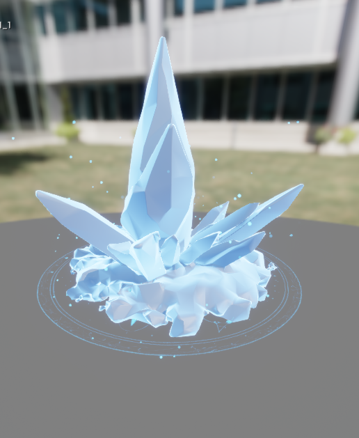

Projets et centres d’intérêt
Centres d’intérêt
Jeux vidéo
Piano
Développement de projets personnels
Réalisations
Ces médias illustrent différents projets personnels réalisés dans le cadre de mon apprentissage.
Projet Vidéo : Présentation d'une démonstration technique.

Serveur RP : Aperçu de mon serveur de jeu (développement en Lua).
Apprentissages personnels
Ces projets m’ont permis de renforcer mon autonomie, ma créativité et ma compréhension des outils numériques (UE5, Lua, Go).